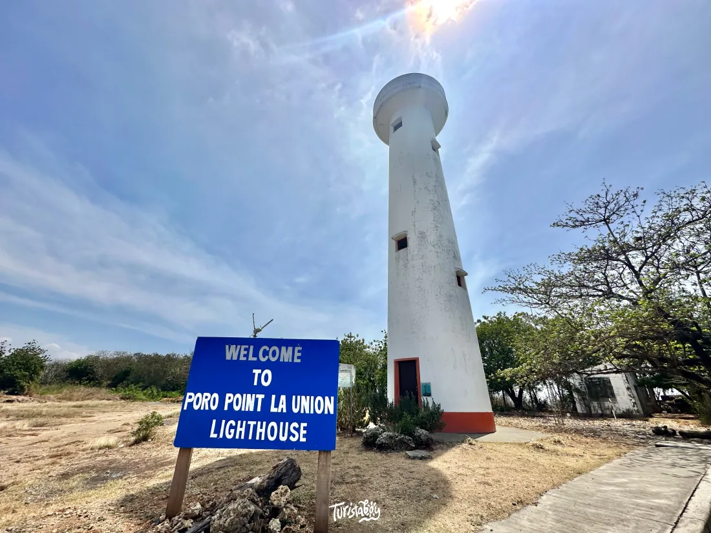

The Poro Point Lighthouse has guided ships through the South China Sea for over 130 years. A historic Spanish-era beacon perched on a rocky promontory — offering some of the most dramatic coastal views in northern Luzon.

Built by the Spanish colonial government in 1892, the Poro Point Lighthouse stands on the rocky tip of Poro Point in San Fernando, La Union — a strategic promontory jutting into the South China Sea. For over 130 years, the lighthouse has guided merchant ships, fishing vessels, and naval craft safely through the waters of Lingayen Gulf.
The lighthouse is a classic example of Spanish colonial engineering — a cylindrical stone tower with a cast-iron lantern room at the top. The structure has survived typhoons, earthquakes, and the ravages of World War II, when the Poro Point area served as a key military installation. The lighthouse was damaged during the war but was subsequently restored and continues to operate as an active navigational aid to this day.
The surrounding Poro Point Special Economic Zone — formerly a US military base — adds another layer of history to the area. The wide, well-maintained roads, old military buildings, and manicured grounds give Poro Point a unique character unlike anywhere else in La Union. The lighthouse sits at the very tip of the point, surrounded by rocky coastline and sweeping sea views.
The Poro Point Lighthouse is located at the tip of Poro Point, San Fernando, La Union — about 270 km north of Manila and easily combined with visits to the Ma-Cho Temple and San Juan surf area.
Take a bus from Cubao or Pasay to San Fernando, La Union. Partas, Dominion, and Philippine Rabbit operate this route. Travel time is about 5₱6 hours depending on traffic.
Travel time: ~5₱6 hours | ~₱400–₱600From San Fernando city center or the bus terminal, hire a tricycle to Poro Point. The ride takes about 15₱20 minutes. Tell the driver you're going to the Poro Point Lighthouse or the Poro Point Special Economic Zone.
Tricycle: ~₱80–₱120 | — ~15₱20 minutesThe lighthouse is inside the Poro Point Special Economic Zone. You may need to register at the gate and show a valid ID. The guards are generally accommodating to tourists — explain that you're visiting the lighthouse and Ma-Cho Temple.
Bring valid ID | No entry fee for touristsThe Ma-Cho Temple is just 5₱10 minutes from the lighthouse — both are on Poro Point. Visit both in the same morning trip, then head to San Juan for an afternoon surf session. A perfect La Union day itinerary.
Ma-Cho Temple: ~5₱10 min away | San Juan: ~20 min awayClick any pin to explore Poro Point Lighthouse and nearby attractions in La Union.
A complete guide to visiting the lighthouse and combining it with the best of La Union in one perfect day.
Register at the gate with your valid ID. The wide, tree-lined roads of the former US military base give Poro Point a unique, almost surreal atmosphere. Drive or ride to the tip of the point where the lighthouse stands.
Walk toward the lighthouse along the rocky promontory. The cylindrical white tower rises against the blue sky, surrounded by the South China Sea on three sides. Take in the full scale of the structure and its dramatic coastal setting.
Walk down to the rocky shoreline below the lighthouse. The waves crash against the rocks, sea birds circle overhead, and the view back up to the lighthouse tower is one of the most photogenic compositions in La Union.
From the tip of Poro Point, you can see the entire sweep of the La Union coastline — from the mountains of the Cordillera in the east to the open South China Sea in the west. On clear days, the distant outline of the Ilocos coast is visible to the north.
Start at the lighthouse at sunrise, then walk or ride 5₱10 minutes to the Ma-Cho Temple. Climb the 7-story pagoda for panoramic views. Both sites can be covered in 2₱3 hours.
Head to San Juan (20 minutes away) for an afternoon surf lesson or beach time. The consistent waves and laid-back vibe make it the perfect afternoon complement to a heritage morning.
Watch the sunset from the San Juan beachfront, then enjoy fresh seafood and cold drinks at one of the many restaurants along the strip. The perfect end to a full La Union day.
"Most people go to La Union just for the surf and miss the lighthouse entirely. That's a shame — it's one of the most atmospheric spots in the province. We went at sunrise and had the entire place to ourselves. The lighthouse against the orange sky, the waves crashing on the rocks below, the smell of the sea — it was genuinely magical. A hidden gem that deserves far more attention."
"We did the Poro Point trifecta — lighthouse, Ma-Cho Temple, and San Juan beach — all in one day. It was the perfect La Union itinerary. The lighthouse is quick but absolutely worth the stop. The rocky shoreline below the tower is stunning and completely different from the sandy beaches of San Juan. Highly recommend combining all three for a full day out."